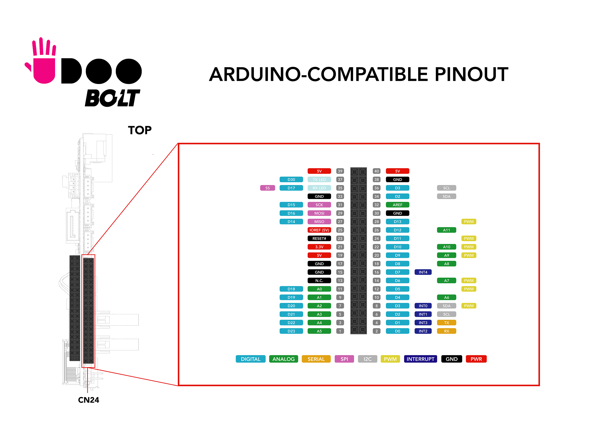
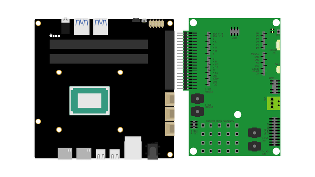

Pinout
The embedded Arduino Leonardo-compatible input/output (I/O) pins operates at 5V, with a maximum 40 mA DC current per pin. They are located on the top of the board on a dual row dedicated female header(CN24).
_
Make sure to check this image to know where are the corresponding Pins
Technical specs
From the Arduino Leonardo page:
| Microcontroller | ATmega32u4 |
| Operating Voltage | 5V |
| Digital I/O Pins | 20 |
| PWM Channels | 7 |
| Analog Input Channels | 12 |
| DC Current per I/O Pin | 40 mA |
| DC Current for 3.3V Pin | 50 mA |
| Flash Memory | 32 KB (ATmega32u4) of which 4 KB used by bootloader |
| SRAM | 2.5 KB (ATmega32u4) |
| EEPROM | 1 KB (ATmega32u4) |
| Clock Speed | 16 MHz |
Each of the 20 digital i/o pins on the Leonardo can be used as an input or output, using pinMode(), digitalWrite(), and digitalRead() functions. They operate at 5 volts. Each pin can provide or receive a maximum of 40 mA and has an internal pull-up resistor (disconnected by default) of 20-50 kOhms. There are six analog input pins at 10-bit resolution, providing a range of 1024 values between ground and 3.3 V. The number of inputs and resolution can be increased if required, by using an external ADC module.
The Leonardo has 12 analog inputs, labeled A0 through A11, and all can also be used as digital i/o. Pins A0-A5 appear in the same locations as on the Uno; inputs A6-A11 are on digital i/o pins 4, 6, 8, 9, 10, and 12 respectively. Each analog input provides 10 bits of resolution (i.e. 1024 different values). By default the analog inputs measure from ground to 5 volts, though it’s possible to change the upper end of their range using the AREF pin and the analogReference() function.
There is a built-in LED connected to digital pin 13. When the pin is HIGH value, the LED is on, when the pin is LOW, it's off
Analog output is simulated using pulse width modulation (PWM) on digital pins 3, 5, 6, 8, 10, 11 and 13. For an explanation of PWM, refer to the following Arduino tutorial
The pins 3 (interrupt 0), 2 (interrupt 1), 0 (interrupt 2), 1 (interrupt 3) and 7 (interrupt 4) can be configured to trigger an interrupt on a low value, a rising or falling edge, or a change in value. See the attachInterrupt() function for details.
Grove connectors
The UDOO BOLT features 3 Grove connectors to use Sensors and actuators from the Grove System by Seeed. The 3 Grove connectors are directly connected to the same pins of the external pinout.
| Grove Connector | Conn. ID | Signal Pins |
|---|---|---|
| Grove Analog | CN26 | A0 - A1 |
| Grove UART | CN27 | Rx/D0 - Tx/D1 |
| Grove I2C | CN28 | SCL/D3 - SDA/D2 |
Arduino® Shields compatibility
This is the first time that a UDOO board doesn't present the standard Arduino® Pinout, however, an esternal accessory is in design to let you use the UDOO BOLT I/O Expansion Board to have the standard Arduino® Pinout and use the all the Arduino® shields you want.
The UDOO BOLT I/O Expansion Board will features a full Arduino® Leonardo Pinout including ICSP connector, RX and TX LEDs as well as the Reset Button, with the addition of an I2C Brick connector compatible with the Snap-in UDOO Bricks, i.e. the flexible sensors by UDOO which also are pluggable in a cascade configuration.